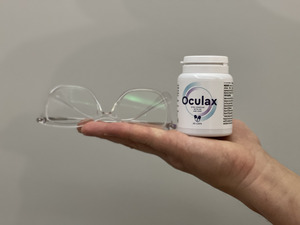
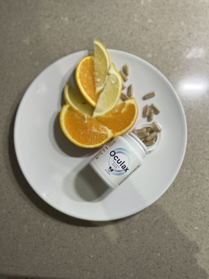

.

Prețurile ochelarilor cresc. Toate din cauza monopolului producătorului de lentile
Această poveste arată cât de des sunt suprimate tinerii talentați în zilele noastre. În calitate de elev de liceu, Adam Vlăsceanu a dorit să participe la un concurs național organizat pentru tinerii oameni de știință, sperând pentru sprijinul profesorului său. El ia arătat formula remediului său inventat de sine însuși, care i-au îmbunătățit vederea în câteva săptămâni. Dar au râs de el și au spus: "Acesta este un lucru ciudat, nu este bun. Nu vă ocupați de prostii!». Nu a primit niciun sprijin din partea profesorului său, ci doar umilință în fața întregii clase.
Din fericire, băiatul a luat lucrurile în propriile mâini. El și-a finanțat singur participarea la concurs, a mers în capitală, unde tinerii inventatori și-au putut prezenta descoperirile. Acolo a întâlnit un investitor care l-a sprijinit în dezvoltarea ulterioară a remediului pe baza formulei sale. Astăzi, brevetul este evaluat la nu mai puțin de 7 miliarde de dolari! Cu toate acestea, tânărul inventator a dorit ca această descoperire revoluționară să fie disponibilă nu numai celor bogați, ci și pentru ca oricine să-l poată folosi. Datorită eforturilor lui Adam Vlăsceanu, toată lumea poate cumpăra astăzi simplu și la un preț scăzut.
Profesorul lui Adam refuză să comenteze acest eveniment. Cu toate acestea, am reușit să contactăm profesorul, care este colegul lui. El a cerut să nu-și pună numele pe site-ul nostru. El a spus că profesorul, care nu a apreciat proiectul tânărului talentat, urma să fie concediat după ce cazul a devenit public, dar apoi l-au lăsat la serviciu. Și Adam Vlăsceanu însuși a cerut acest lucru, în ciuda faptului că el a fost cel care a fost insultat!
Am reușit să contactăm tânărul geniu prin telefon. Când l-am întrebat, de ce a iertat profesorul care a râs de invenția sa revoluționară și l-a umilit în fața tuturor, a răspuns calm:
"Oamenii fac greșeli. Întotdeauna merită să le oferim o a doua șansă. Am aflat despre asta de la bunicul meu, pentru care am inventat formula . Am vrut cu adevărat să-l ajut să-și recapete vederea și am crezut că invenția mea poate face acest lucru. Nimic nu mă poate face să abandonez această idee. Sunt fericit că am întâlnit un om care a crezut în mine. Datorită acestui fapt, l-am ajutat nu numai pe bunicul meu, ci și pe mii de alți oameni care nu mai aveau nicio speranță de a-și putea recâștiga vederea normală."
Acum, cele mai mari companii de tehnologie concurează pentru Adam Vlăsceanu, vor să-și finanțeze următoarele proiecte. Cu toate acestea, cel mai important lucru pentru el este o educație științifică, vrea să o termine mai întâi și abia apoi să înceapă să-și construiască o carieră. Este greu de imaginat cu ce alte invenții acest tânăr geniu va surprinde lumea!
al tânărului om de știință ar putea fi cumpărat în țara noastră deja această săptămână. Cu toate acestea, interesul pentru el a fost atât de mare încât primele stocuri au fost aproape complet vândute în câteva zile. În același moment au început în masă să apară falsurile remediului lui Adam Vlăsceanu. De ce există un astfel de interes pentru acest instrument?
Întrebarea noastră a fost răspunsă de Daniel Adamache, specialist în domeniul oftalmologiei, adică o disciplină care studiază patologia organelor de vedere.
"Oamenii care au avut de-a face cu probleme de vedere în viața de zi cu zi aveau încă trei opțiuni. În primul rând: purtau ochelari care le permiteau să vadă mai bine. Dar, din păcate, ei fac ochii "leneși", ceea ce agravează problema. Aceasta înseamnă că trebuie să schimbați ochelarii la cei mai puternici cel puțin o dată pe an. Cine are nevoie de aceasta? Prețurile pentru ramele de ochelari sunt pur și simplu teribile. Mai mult, o simplă schimbare de sticlă nu este rezolvă problema. Este ca și cum ai vrea să slăbești, dar cumperi pantaloni mai mari în loc să faci mișcare. Acest lucru poate fi suficient pentru o vreme, dar în curând devine clar că vom avea nevoie din nou de pantaloni mai mari. Deci, cheltuim mulți bani, iar acest lucru nu rezolvă în niciun fel problema noastră reală. Mai mult, se înrăutățește! Din păcate, majoritatea oamenilor nu realizează acest lucru la timp. Până când își dau seama că problema lor necesită o abordare diferită, este adesea prea târziu pentru a-și salva ochii.

A doua opțiune - lentilele de contact. Defectul lor fatal este același ca în cazul ochelarilor. În plus, din punct de vedere al igienei, lentilele de contact sunt o soluție dubioasă. În fiecare zi trebuie să introduceți plăci mici cu degetele direct în globul ocular... Puțini oameni știu, că atunci când vă puneți lentile de contact, ele vă aduc aproximativ 5 milioane de bacterii în ochi. Prin urmare, nu este surprinzător faptul că proprietarii lentilelor se plâng adesea de infecții oculare sau de zona din jurul ochilor. Și nu întotdeauna măsurile luate în timp util protejează împotriva consecințelor grave. Bacteriile pot intra în zona din spate a globului ocular și pot duce la inflamarea nervilor optici. Și acesta este un dezastru, pentru că persoana își pierde vederea la fel de brusc, pe măsură ce se stinge lumina.
Recent, a treia opțiune a devenit foarte la modă, aceasta este așa-numita corecție a vederii cu laser. Această procedură constă în cauterizarea anumitor zone ale corneei cu laser. Nu numai că această arsură severă a ochilor este periculoasă pentru vedere, ci și faptul că procedura trebuie repetată la fiecare câteva luni. Totuși, iată ce vreau să spun... gândiți-vă câți specialiști în domeniul oftalmologiei pe care i-ați întâlnit poartă ochelari? De ce fac acest lucru, atunci când ar putea ajuta ochii cu chirurgia cu laser? Interesantă întrebare, nu-i așa? Nu cunosc nici un singur specialist care să fie supus unei astfel de proceduri, în ciuda faptului că îl recomandă oamenilor…
În același timp , dezvoltat de Adam Vlăsceanu, nu au efecte dăunătoare... Principiul de funcționare al acestui instrument nu prevede metode non-naturale, cum ar fi cauterizarea zonelor din ochi sau o "cârjă" auxiliară sub formă de ochelari sau lentile. Adam Vlăsceanua creat o formulă care funcționează din interior, reconfigurează organismul pentru a ajuta la recuperarea proceselor în care vederea se îmbunătățește. conține vitamine și oligoelemente cu proprietăți antioxidante, principalii nutrienți pentru funcționarea sistemului de protecție a ochilor împotriva daunelor oxidative, de razele dăunătoare ale spectrului albastru al luminii solare.
Spre deosebire de multe remedii care sunt vândute în farmaciile noastre private, secretul principal al eficacității este în ingredientele atent selectate. Tânărul om de știință nu a amestecat doar substanțe cunoscute de el care erau utile pentru vedere. El a studiat în detaliu modul în care interacționează între ele și ce efect arată la nivel celular. Datorită acestui fapt stimulează în mod natural circulația sângelui în vasele ochilor, mușchilor oculari și retinei și regenerează celulele oculare într-un mod neinvaziv. Datorită acestui fapt deja la 21 de zile de la începerea cursului de administrare a , apar semne vizibile de îmbunătățire a vederii și eliminarea simptomelor de miopie, hipermetropie, astigmatism și alte probleme. Și după terminarea cursului complet (2 luni), o persoană poate uita că a avut odată o tulburare de vedere!»
Domnul Adamache vrea doar să avertizeze potențialii cumpărători să fie atenți să nu cumpere accidental un fals online. În ciuda popularității mari a au apăru foarte multe falsificări. Capsulele arată exact la fel ca , dar compoziția lor este complet diferită.
De aceea am dori să oferim cititorilor noștri un link prin care li se poate garanta achiziționarea produsului original , dezvoltat de Adam Vlăsceanu. Este demn de remarcat faptul că pe această pagină de asemenea, puteți profita de o reducere de 50%, pe care tânărul inventator le-a prezentat utilizatorilor care locuiesc în țara sa natală.
Prețurile ochelarilor cresc. Toate din cauza monopolului producătorului de lentile
Aditivi biologic activi pentru îmbunătățirea vederii. Ce recomandă experții?
Glaucom ereditar? Nu ar trebui să fie așa!
Aceste cadre costă mai mult decât o mașină de gamă medie.

Lentile progresive: argumente pro și contra
5 lucruri pe care specialiștii în domeniul oftalmologiei nu le spun clienților lor
Am decis corectarea vederii cu laser. El nu poate vedea nimic astăzi

Lentila antireflex - merită cu adevărat?

Vizualizare >>
Comentarii
Maria
Este imediat evident că este o persoană rezonabilă, grijulie. Întotdeauna am spus că tinerii noștri sunt foarte deștepți!
Claudia
Au folosit oare oricare dintre voi acest ? Dacă da, ați recomanda-o?
Gabi
M-aș alătura întrebării. De îndată ce am citit articolul, m-am gândit imediat că acest lucru s-ar putea potrivi bunicii mele.
Gabriel
Îl folosesc de două săptămâni și sunt impresionat. Anterior, dacă voiam să citesc compoziția produsului pe ambalaj, trebuia să-l țin departe. Dar acum pot citi cărți și ziare fără probleme. Fiecare zi tot mai bine. Recomand sincer, merită.

Brândușa
Din păcate, în timpul studiilor la facultatea de Biologie, vederea mi s-a deteriorat foarte mult, pentru că trebuie să citesc mult, adesea chiar și noaptea... Și până când mi-am dat seama de asta, ochiul stâng era deja 5, dreapta 4-5 ș-a format astigmatismul ambilor ochi. Teribil. Nu puteam merge la piscină pentru că nu vedeam nimic și eram alergic la lentilele de contact. M-am gândit: Voi fi complet orb înainte de a-mi termina studiile și nu voi experimenta niciodată bucuriile vieții. Dar, din fericire am găsit acest site cu . Când colegul meu de cameră (de asemenea student) a văzut că iau aceste capsule, a râs și nu a crezut că ar putea da rezultate. Dar când am început să merg fără ochelari, a fost impresionat.
Margareta
Acesta este un super remediu, I-am dat mamei mele, deși credea că vede perfect. Dar apoi nu putea scrie corect numărul la telefon pentru că nu vedea numerele... i-am spus odată: "Mamă, vrei să-i explici mătușii Lioarei sau unchiului Gheorghe pentru tot restul vieții tale de ce le suni tot timpul din întâmplare?» Totul e în regulă, dar poți încerca altceva." Am convins-o când i-am spus că nu trebuie să poarte ochelari pentru asta, ci doar să ia capsule. La început nu prea era de acord, dar apoi a mulțumit :)
Sabina
Pot vedea bine în timpul zilei, dar când se întunecă... Nici măcar nu pot conduce vehicolul pe întuneric. Mă vor ajuta aceste capsule?
Horia
Sabina, am avut aceeași situație. Dintr-o dată totul a devenit neclar, nu am putut vedea nimic în întuneric. Am crezut că a venit doar cu timpul și nu am putut face nimic în legătură cu asta. Cu toate acestea, undeva după a 3-a săptămână de administrare a situația a început să se schimbe. Capsulele m-au ajutat si cu miopie, aveam -11 dioptrii la ambii ochi... Și acum, pur și simplu luând capsule de câteva ori pe zi, am început să văd mult mai clar. Aceasta este o ușurare incredibilă, acum nu trebuie să întreb pe nimeni cât costă produsele în magazin.
Mădălina Mălâia
Aș fi fericită dacă fiul meu ar deveni la fel de deștept ca acest tânăr. E incredibil de talentat, doar teribil de leneș. El doar joacă pe calculator toată ziua... Este plăcut să știi că există tineri care sunt gata să facă ceva pentru oameni.
Emilia Țuțea
De asemenea, am văzut profesori care îi fac pe elevi să se simtă nesiguri, îi descurajează să facă ceva, așa că nu am fost surprins că acest lucru i s-a întâmplat cu acestui băiat. Dacă adulții arată un astfel de exemplu, atunci ce ne așteptăm de la copii? Tatăl meu m-a învățat mai mult matematică și istorie decât la școală. Ar trebui să fiți fericiți că există o astfel de persoană în viața ta.
Bogdan Negoiță
Ei bine, atât în școală, cât și în viață: profesorul este, de asemenea, un om, iar oamenii sunt diferiți. Dar nu vreau să vorbesc despre asta. Știe cineva dacă aceste capsule funcționează ca măsură preventivă? Am o predispoziție ereditară la cataractă și mă tem foarte mult că le voi dezvolta. Va ajuta în asta?
Sonia Tunaru
@Bogdan Negoiță, da, deoarece aceste capsule conțin substanțe utile care îi lipsesc organismului pentru vederea normală. Luând capsule, nu permiteți dezvoltarea problemelor. Am sindromul ochilor uscați din cauza faptului că lucrez mult la computer (știu că nu este la fel de grav ca cataracta, dar totuși), iar de-a lungul anilor vederea mea s-a deteriorat. Dar datorită văd foarte bine din nou. Deci cred că vă se va potrivi și vouă.

Carol
@Bogdan Negoiță, glaucomul meu este ereditar. Toți bunicii mei au suferit o intervenție chirurgicală, iar mama mea este, de asemenea, verificată de asemenea în fiecare an din acest motiv. Dar din moment ce am băut cu toții cursul , nu avem probleme cu vederea acum. Specialistul mamei mele a spus că nu a văzut niciodată o astfel de îmbunătățire într-un timp atât de scurt în viața sa. Atât mama, cât și eu putem dormi liniștit și nu ne facem griji pentru vedere.
Bogdan Negoiță
Mulțumesc! Atunci voi încerca și eu
Renata
Bună ziua, aș dori să adaug la conversația despre propriul meu exemplu, deoarece în urmă cu câțiva ani, din păcate, am avut o astfel de operație cu laser la ochi. Nu numai că recuperarea durat săptămâni întregi, ci și după cum s-a dovedit șase luni mai târziu, problema mea de vedere a revenit și a devenit și mai gravă... Și , pe care l-a inventat acest tânăr, este un adevărat miracol. Nu este nevoie să atingeți ochiul în niciun fel, vederea poate fi îmbunătățită complet în siguranță. Ochii mei s-au îmbunătățit cu 4 dioptrii și nu mai am nevoie de ochelari. Și patru săptămâni au fost suficiente pentru toate astea! Îl recomand oricui care vrea să scape de ochelari.
Elisabeta Mălâia
Cândva, fiul meu m-a convins odată să fac o astfel de procedură pentru el și mi-a oferit să o fac și eu. Mi-a fost frică și nu am fost de acord, iar acum mă bucur că nu am mers, pentru că după ceva timp fiul meu a început să vadă din nou prost, iar specialistul i-a spus că procedura trebuie repetată... Mulțumesc! Sunt recunoscătoare că au creat o astfel de metodă care corectează vederea fără interferențe exterioare. Aștept deja un pachet pentru mine și fiul meu.
Dalia Stăruială
Aș încerca cu plăcere, deoarece port lentile de contact, iar singura problemă cu ele constă în faptul că... Într-o zi am plecat în vacanță și am lăsat lichidul lentilelor acasă. A trebuit să trec prin călătorie orbește, pentru că era imposibil să o cumpăr oriunde. Acum, când am citit despre această inflamație a nervului optic, a devenit foarte înfricoșător pentru mine... uneori nici măcar nu ne dăm seama cât de mult ne dăunăm.
Albert
Ochelarii nu m-au deranjat niciodată, dar întotdeauna am avut probleme să port unele pentru lectură și altele pentru uzul zilnic și nu le scoteam. Din acest motiv, las întotdeauna restul la casă în magazin... Soția mea a spus că voi încerca din nou să plătesc jumătate din salariu pentru un pachet de paste, mă va da afară din casă. Ei bine, datorită am scăpat de problema mea de vedere în doar 4 săptămâni și nici măcar nu mai trebuie să port ochelari conform prescripției medicale. M-a ajutat foarte mult, iar soția mea a devenit mai calmă.
Lucian
De asemenea, am folosit și nu va mai trebui să port niciodată ochelari corectori. Mă simt cu 10 ani mai tânăr, pentru că fiecare ramă a ochelarilor mă făcea în exterior o bătrână... Acum mă uit în oglindă cu bucurie :)